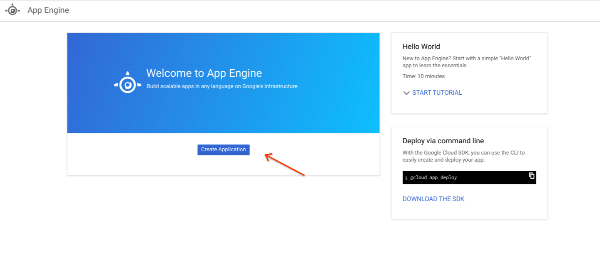
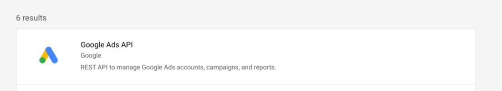
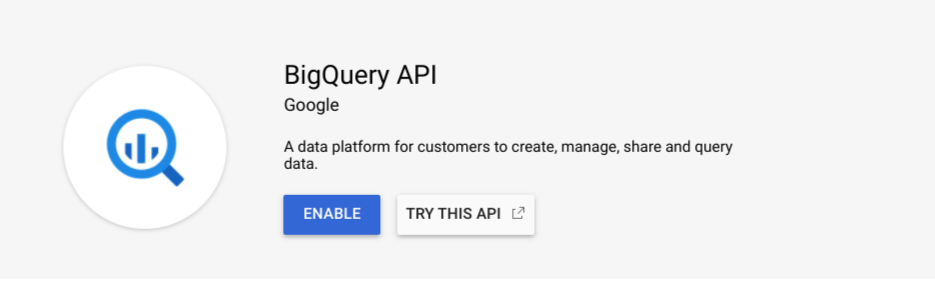
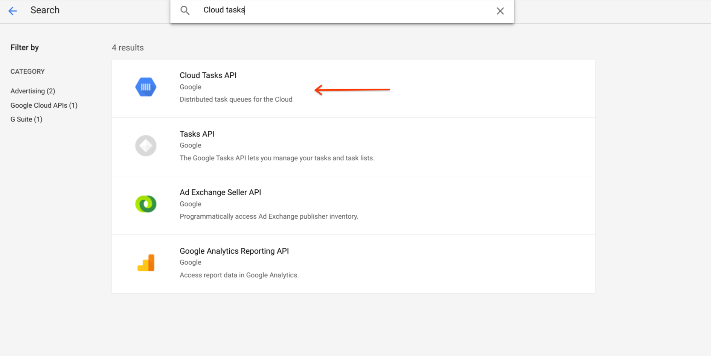

Deploying the solution
Once you have the credentials required
for the solution, follow the steps below to deploy it:
Preparing the Cloud Project
-
If you haven't already, create a
new Google Cloud Project. You can also reuse an existing project if
you prefer, but you will need to ensure none of the existing deployed apps
and big query tables conflict with those required by the opportunity
finder.
-
Create a new App Engine application for the project. You can use the
cloud shell for this with the command `gcloud app create` or use the web
interface. For the web interface, open the hamburger menu, select App
Engine from the list of options, and then click the Create
Application button.

-
Enable the Google Ads API for the project. From the APIs & Services
Library, select the Google Ads API, and then click the ENABLE
button on the API's details page.

-
Enable BigQuery for the project by selecting BigQuery from the navigation
menu and then clicking the ENABLE button on the BigQuery API
page.

-
Enable Firestore in native mode for the project. Please be sure to
select native mode. This cannot be changed, so if you choose Datastore
mode, or are trying to reuse a project where Datastore mode is already
in use, you will need to create a new project.

-
Enable the Cloud Tasks API for the project. From the APIs & Services
Library, select the Cloud Tasks API and then click on the ENABLE
button on the API details page.

Deploying the solution
-
In the Google cloud console, clone the
solution repository.
-
In the file Controller-Service/service.yaml, set the value of
APP_LOCATION to the region you selected when creating the
app engine app. If you aren't sure which region you chose, you can use
command $ gcloud config list.
-
In the cloud console, run the install shell script:
$ bash ./install.sh
Finishing the deployment
-
Enter all of the credentials you
gathered on the config page of your deployed app. This should
be located at
http://config-service.<YOUR PROJECT>.appspot.com/config
-
Once the credentials are entered, click the Start OAuth Flow
button and compete the OAuth flow to provide the solution access to your
Ads accounts. If successful, the page below will be shown. Please
Note: This step must be carried out by someone with access to
the MCC you are using for the solution.
-
To test the solution and start the first round of data collection, ping
the controller service. This should be located at
https://controller-service.<YOUR PROJECT>.appspot.com
. Please note that the page will likely time out before you receive a
reply. To see if it worked, check the Cloud logs and the BigQuery
tables.
-
Set the Cloud project firewall rules to only allow access to the
services, excepting the config service, from the app itself. This will
ensure outside actors are not using project resources or adding unwanted
data to the BigQuery tables.
Attaching the dashboard
The final step is to attach the Data Studio dashboard to the backend. Follow
the steps below to and be sure to copy the data sources first to ensure the
calculated fields in the data sources are maintained.
- Make a copy of both of the data studio data sources and connect them
to appropriate BigQuery tables in your cloud project. The connectors can
be found here:
Use the copy icon, located next to the CREATE REPORT button, to
make the copy.

-
After confirming you want to copy the data source, a new window should
open. Select your project, the agency_dashboard dataset, and the
appropriate table for the connector being copied.

-
Make a copy of the
dashboard template To copy the template, click the
USE TEMPLATE button at the top right of the page.

-
In the resulting dialog, choose the BigQuery data sources you created
with your project tables.